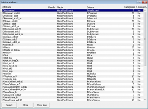

Začínáme
Systém LISp-Miner a proces DZD
Analytické procedury
Pokročilé funkce
Výzkum a vývoj
Začínáme
Systém LISp-Miner a proces DZD
Analytické procedury
Pokročilé funkce
Výzkum a vývoj
Důležitou částí zadávání analytických úloh je výběr atributů použitých v úloze a zadávání množiny automaticky generovaných relevantních cedentů (booleovských atributů). Jde o činnost společnou pro všechny úlohy všech typů analytických procedur.
V každé úloze bude třeba vybrat atributy, které budou vystupovat v hledaných vztazích, a ve většině úloh bude třeba zadat jednu (nebo více) množin relevantních cedentů. Podle typu analytické procedury se taková množina zadává pro určení podmnožiny záznamů datové matice (všechny úlohy), pro antecedent a sukcedent (např. ve 4ft-Mineru) pro definici první a druhé podmnožiny úloh typu SetDifference či pro definici stavu před a stavu po (viz Ac4ft-Miner).
Zejména široké možnosti zadávání potenciálně rozsáhlé množiny relevantních cedentů odlišují systém LISp-Miner a v něm implementované GUHA-procedury od ostatních nástrojů pro DZD.
Při zadávání analytické úlohy musíme vždy vybrat jeden nebo více atributů, které se mají vyskytovat v hledaných vztazích, ať má jít o asociační pravidla, rozhodovací stromy nebo například o podmíněné histogramy.
Pro výběr jednoho atributu (nebo i více atributů najednou) se ve všech případech používá dialogové okno, které vidíme na obrázku:
Rozvržení dialogového okna je obdobné záložce Attributes. V levé části je strom skupin atributů, v pravé části pak seznam atributů patřících do právě vybrané skupiny. Atribut vybereme jeho označením v seznamu vpravo a stiskem buď klávesy Enter, nebo tlačítka Select attribute, nebo dvojitým kliknutím myší na tento atribut.
Při výběru atributů do zadání úlohy je možné označit i více atributů najednou (pomocí klávesy Ctrl i v nesouvislé řadě), a teprve potom stisknout tlačítko Select attribute. Všechny označené atributy budou vloženy do příslušné části v zadání úlohy a případně pro ně budou vytvořena i zadání literálů. Dokonce je možné rychle vybrat a do zadání vložit všechny atributy z nějaké skupiny atributů, a to dvojitým kliknutím přímo na skupinu atributů ve stromu v levé části dialogového okna. Vhodným rozdělením atributů do skupin ve fázi Předzpracování dat si tak můžeme ušetřit i práci při vybírání vhodných atributů do zadání analytických úloh.
Zaškrtávací volby pod seznamem atributů slouží pro omezení vypisovaných atributů podle zvoleného filtru. Volba Hide attributes with other than parent membership in this group odstraní z výpisu atributy, které patří do více skupin současně a nemají právě nastavenou skupinu jako hlavní (rodičovskou). Druhé dvě volby se týkají nastavené hodnoty parametru variability u každého z atributů.
Pomocí tlačítka Group Detail je možné změnit údaje o právě nastavené skupině atributů – v úvahu připadá zejména oprava pojmenování skupiny, například kvůli překlepu.
 Tlačítkem Show list přepneme na dialogové okno s abecedně setříděným seznamem všech atributů, bez ohledu na jejich příslušnost do skupin.
To se hodí v případě, že si pamatujeme název atributu, ale nejsme si jisti, do které skupiny byl přiřazen. I v tomto dialogovém okně lze vybrat jeden nebo i více atributů najednou. V seznam lze oproti stromu vybrat najednou i atributy z různých skupin.
Zpět na zobrazení stromu skupin atributů se přepneme tlačítkem Show Tree.
Cedent je odvozený booleovský atribut tvořený konjunkcí dílčích cedentů. Ty jsou samy o sobě také odvozenými booleovskými atributy a jsou tvořeny konjunkcemi nebo disjunkcemi literálů. Literál je základních booleovský atribut nebo jeho negace.
Více viz: Zadání množiny relevantních cedentů
Více viz: Zadání cedentu
Více viz: Zadání dílčího cedentu
Více viz: Zadání literalu
V modulech implementujících GUHA-procedury CF-Miner, KL-Miner, MCluster-Miner, ETree-Miner, SDCF-Miner a SDKL-Miner se setkáme s výše popisovanými cedenty pouze v podobě podmínky. Na ostatních místech se zadávají pouze prosté seznamy atributů. Aby však podoba záložky Task Settings zůstala obdobná i pro tento typ GUHA-procedur, byl zvolen podobný způsob zobrazení jako v případě cedentů.
Zároveň byla ponechána i možnost definice dílčích skupin atributů, které odpovídají skupinám atributů z předzpracování. I v případě těchto GUHA-procedur tak uvidíme v seznamu atributů neodsazené a odsazené řádky, podobně jako u dílčích cedentů. V tomto případě je však nazýváme dílčí skupiny atributů.
A konečně existuje i obdoba zadání literálu, která v minimalistické podobě obsahuje pouze vybraný atribut (například při výběru atributů v úloze pro ETree-Miner). Někdy však může být nutné zadat kromě atributu i další parametry – jako je váha a způsob počítání těžiště v úloze pro MCluster-Miner.
Tato specifika jsou popsána na stránce týkající se popisu zadání úloh pro příslušnou proceduru.
Související témata:
 Zadání úlohy
Zadání úlohy
 Klonování úlohy
Klonování úlohy
 Kontrola zadání úlohy
Kontrola zadání úlohy
 Výpočet úlohy
Výpočet úlohy

{kind=link}
{kind=link}
{kind=link}